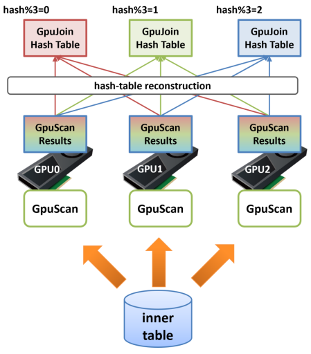

Pinned Inner Buffer
This chapter introduces the Pinned Inner Buffer feature, a technology that improves efficiency of large tables join using GPU-Join.
Overview
Look at the EXPLAIN output below.
When PG-Strom joins tables, it usually reads the largest table (lineorder in this case; called the OUTER table) asynchronously, while performing join processing and aggregation processing with other tables. Let's proceed.
Due to the constraints of the JOIN algorithm, it is necessary to read other tables (date1, part, supplier in this case; called the INNER tables) into memory in advance, and also calculate the hash value of the JOIN key. Although these tables are not as large as the OUTER table, preparing an INNER buffer that exceeds several GB is a heavy process.
=# explain
select sum(lo_revenue), d_year, p_brand1
from lineorder, date1, part, supplier
where lo_orderdate = d_datekey
and lo_partkey = p_partkey
and lo_suppkey = s_suppkey
and p_brand1 between 'MFGR#2221' and 'MFGR#2228'
and s_region = 'ASIA'
group by d_year, p_brand1;
QUERY PLAN
---------------------------------------------------------------------------------------------------------------
GroupAggregate (cost=31007186.70..31023043.21 rows=6482 width=46)
Group Key: date1.d_year, part.p_brand1
-> Sort (cost=31007186.70..31011130.57 rows=1577548 width=20)
Sort Key: date1.d_year, part.p_brand1
-> Custom Scan (GpuJoin) on lineorder (cost=275086.19..30844784.03 rows=1577548 width=20)
GPU Projection: date1.d_year, part.p_brand1, lineorder.lo_revenue
GPU Join Quals [1]: (part.p_partkey = lineorder.lo_partkey) ... [nrows: 5994236000 -> 7804495]
GPU Outer Hash [1]: lineorder.lo_partkey
GPU Inner Hash [1]: part.p_partkey
GPU Join Quals [2]: (supplier.s_suppkey = lineorder.lo_suppkey) ... [nrows: 7804495 -> 1577548]
GPU Outer Hash [2]: lineorder.lo_suppkey
GPU Inner Hash [2]: supplier.s_suppkey
GPU Join Quals [3]: (date1.d_datekey = lineorder.lo_orderdate) ... [nrows: 1577548 -> 1577548]
GPU Outer Hash [3]: lineorder.lo_orderdate
GPU Inner Hash [3]: date1.d_datekey
GPU-Direct SQL: enabled (GPU-0)
-> Seq Scan on part (cost=0.00..59258.00 rows=2604 width=14)
Filter: ((p_brand1 >= 'MFGR#2221'::bpchar) AND (p_brand1 <= 'MFGR#2228'::bpchar))
-> Custom Scan (GpuScan) on supplier (cost=100.00..190348.83 rows=2019384 width=6)
GPU Projection: s_suppkey
GPU Pinned Buffer: enabled
GPU Scan Quals: (s_region = 'ASIA'::bpchar) [rows: 9990357 -> 2019384]
GPU-Direct SQL: enabled (GPU-0)
-> Seq Scan on date1 (cost=0.00..72.56 rows=2556 width=8)
(24 rows)
GpuJoin usually reads the INNER table through the PostgreSQL API row-by-row, calculates its hash value, and writes them to the INNER buffer on the host shared memory. The GPU-Service process transfers this INNER buffer onto the GPU device memory, then we can start reading the OUTER table and processing the JOIN with inner tables. If the INNER table is relatively large and contains search conditions that are executable on the GPU, GpuScan may exists under GpuJoin, as in the EXPLAIN output below. In this case, the INNER table is once processed on the GPU by GpuScan, the execution results are returned to the CPU, and then written to the INNER buffer before it is loaded onto the GPU again. It looks like there is quite a bit of wasted data flow.

In this way, if data ping-pong occurs between the CPU and GPU when reading the INNER table or building the INNER buffer, you can configure GPUJoin to use Pinned Inner Buffer. It is possible to shorten the execution start lead time and reduce memory usage.
In the above EXPLAIN output, reading of the supplier table will be performed by GpuScan, and according to the statistical information, it is estimated that about 2 million rows will be read from the table. Meanwhile, notice the output of GPU Pinned Buffer: enabled. This is a function that if the estimated size of the INNER table exceeds the configuration value of pg_strom.pinned_inner_buffer_threshold, the processing result of GpuScan is retained in the GPU memory and used as part of the INNER buffer at the next GpuJoin. (If necessary, hash value calculation is also performed on the GPU).
Therefore, after the contents of the supplier table are read from storage to the GPU using GPU-Direct SQL, they can be used in the next GPUJoin without being returned to the CPU or loaded to the GPU again.
However, there are some points to be aware of.
To use Pinned Inner Buffer, CPU-Fallback must be disabled.
CPU-Fallback is a function that writes back to the CPU data that could not be processed by the GPU and re-executes it. For example, a conditional expression that references TOASTed variable-length data cannot be executed by the GPU in principle, so this function is used to write it back to the CPU and re-execute it. However, if a CPU-Fallback occurs while executing GpuScan, it cannot be guaranteed that the result buffer in the GPU memory (which is used as the INNER buffer for GpuJoin) is a complete result set.
In addition, if a CPU-Fallback occurs when executing GpuJoin that uses Pinned Inner Buffer, the CPU cannot execute the fallback process because it does not have the INNER buffer required for JOIN in the first place.
Therefore, to use Pinned Inner Buffer, it is necessary to disable CPU-Fallback by specifying SET pg_strom.cpu_fallback = off.
This is the same reason why GPU-Sort also requires disabling CPU-Fallback processing.
in case multi-GPUs
In many systems, the capacity of GPU RAM is limited compared to the host system RAM, and there are also constraints on the size of the hash table. This limitation can be alleviated by splitting the hash table across multiple GPUs, but if an INNER row located on one GPU is referenced while a JOIN is being executed on another GPU, a phenomenon known as GPU memory thrashing occurs, resulting in a significant slowdown in speed. Therefore, a mechanism is needed to ensure locality of memory access while GPU-Join is being executed.
In a multi-GPU system, the Pinned Inner Buffer works as follows:
If the INNER table scan process is executed on multiple GPUs prior to GPU-Join and the results of that process are stored in GPU memory to build a hash table, it is completely random which rows are on each GPU.
If the rows read from the OUTER side in the next step, the Hash-Join process, are first joined with the INNER row on GPU1, then with the INNER row on GPU2, and finally with the INNER row on GPU0, extreme thrashing will occur, causing a severe drop in performance.
For this reason, when using the Pinned-Inner-Buffer in a multi-GPU system, a reconstruction process is inserted and the hash table is reallocated to the appropriate GPU.
For example, in a system equipped with three GPUs, if the size of the hash table fits roughly into the RAM of the three GPUs, after the GPU-Scan of the INNER table is completed, the hash value of the join key to be used in the next GPU-Join is calculated, and if the remainder when dividing this by 3 is 0, it is reallocated to GPU0, if it is 1 then it is reallocated to GPU1, and if it is 2 then it is reallocated to GPU2.
By inserting this process, it is possible to create a state in which when GPU-Join is executed on GPU0, the hash table will only contain INNER rows whose remainder when the hash value is divided by 3 is 0, and similarly, GPU1 will only contain INNER rows whose remainder when the hash value is divided by 3 is 1.

Next, when GPU-Join is executed using this divided hash table, when the GPU that first loaded data from the OUTER table (let's call it GPU2 here) references the hash table, if the remainder when dividing the hash value calculated from the OUTER row by 3 is other than 2, then there will obviously be no matching INNER row on that GPU.
Therefore, GPU2 will generate a join result consisting of only hash values whose remainder when divided by 3 is 2. Next, this OUTER data is transferred to GPU1 by GPU-to-GPU Copy, which generates a join result consisting of only hash values whose remainder when divided by 3 is 1.
By repeating this process, "partial Hash-Join results" are generated on each GPU, but the combination of these is equal to the complete Hash-Join result, and as a result, it is now possible to execute GPU-Join even if the INNER hash table is larger in size than the GPU's on-board RAM.

In relation to this feature, the pg_strom.pinned_inner_buffer_partition_size parameter has been added.
This specifies the threshold size for dividing the Pinned-Inner-Buffer among multiple GPUs. The initial value is set to about 80-90% of the GPU's installed memory, so administrators usually do not need to change this.